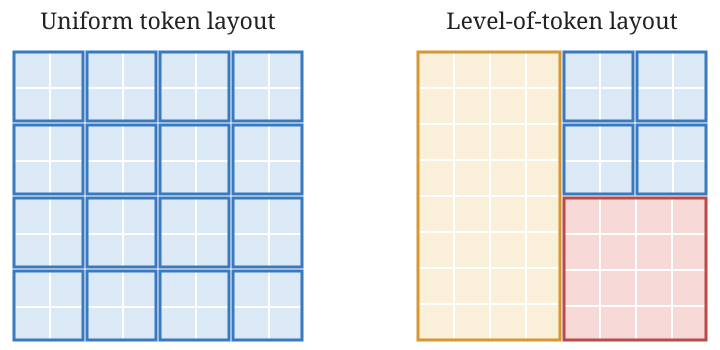

Level-of-Token Diffusion
1Stanford University2Google
Abstract
Image and video diffusion models allocate equal computation to every region, even when the intended scene calls for varying levels of detail. The spatial distribution of detail can often be anticipated before generation, indicating where computation can be reduced. We introduce Level-of-Token (LoT) Diffusion, a framework that turns this knowledge into an explicit multiresolution token layout (Level-of-Token layout) for adaptive and efficient generation. Tokens represent rectangular patches of varying sizes and shapes, allocating finer tokens where detail is needed and coarser tokens elsewhere. We adapt pretrained diffusion transformers to LoT layouts through a patch-wise asymmetric flow parametrization and embeddings for multiresolution tokens, preserving full-resolution flow prediction at every denoising step while processing only a reduced token sequence. LoT Diffusion enables layout-adaptive generation while preserving pretrained generative priors. We demonstrate LoT with layouts derived from semantic masks, bounding boxes, texture variance, and depth-of-field cues, as well as agentic plans. Across image and video generation, LoT offers favorable quality–efficiency tradeoffs, with significant speedups determined by the layout’s token budget.
Method
Level-of-Token (LoT) Layout
We generalize the uniform token layout used by pretrained diffusion models to a Level-of-Token (LoT) layout: a multiresolution layout in which different regions receive different levels of token detail. Fine tokens cover regions that need detail, while larger, coarser tokens cover other regions. Each rectangular region becomes one token, reducing the sequence length while covering the full image.

Explore a real LoT layout below: each rectangle is one token. From top to bottom, the letters get progressively more detailed, from plain paint to dense jasmine blossoms, and the layout spends progressively finer tokens on them, while coarse tokens cover the plain background.
LoT Diffusion
We fine-tune pretrained diffusion transformers with patch-wise asymmetric flow matching. A LoT layout maps the full-resolution latent grid to a shorter token sequence; shape-aware transformer blocks and extent-dependent output heads recover a dense velocity field for training and denoising.
LoT Layout Adaptive Generation
Bounding boxes, semantic masks, texture variance (VRS), and depth maps indicate where detail matters. We turn each source into a LoT layout, allocating finer tokens to important or detailed regions and coarser tokens elsewhere, then generate an image with that layout. The same process applies to video through per-frame LoT layouts that allocate tokens over time.
Results
Citation
@unpublished{nakayama2026leveloftoken,
title = {Level-of-Token Diffusion},
author = {Nakayama, Kiyohiro and Chao, Brian and Ackermann, Jan and
Chen, Hansheng and Tombari, Federico and Guibas, Leonidas and
Yariv, Lior and Wetzstein, Gordon},
year = {2026}
}